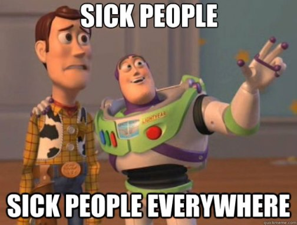

Waarin viikkotiedote 4 - fuksikuppa strikes!
21.09.2015 fuksit / viikkotiedote /
Köh köh,
ja oikein hyvää viikon alkua teillekin fuksit! Waariinkin on vihdoin tarttunut pahamaineinen fuksikuppa, täällä mä niiskuttelen tätä tiedotetta kirjoittaessa. Onneksi ei ole mitään mihin Finrexin ei tehoaisi!
Viime viikko oli taas huikea puristus. Fuksisitsit onnistuivat loistavasti ja laulukirjakin oli täynnä kivoja kommentteja, kiitos niistä. :) Mulla oli ainakin tosi mukavaa koko päivän ajan. Jos sitsejä haluaa lisää, tulee lokakuussa SciFi-sitsit! Niistä lisää alemmassa wall-of-textissä.
Fuksiexcukin oli mieletön. Sieltä parhaiten mieleen jäi TiTe vs. TiK flipcup-turnaus, jonka revanssiottelu voitettiin, sekä tietysti eeppinen Jukan pöllimisyritys (joka ensi kerralla ei jää yritykseksi!) Yritysexcursio oli myös erikoinen vapaamuotoisuudellaan sekä rentoudellaan, mutta sellaisia alan firmat aika usein myös ovat. Ei ole turhaa jäykistelyä. :)
Tällä viikolla killalta on luvassa tämänpäiväinen Tech Night, tiistaina sisätoimikunnan ilmainen safka- ja rekryilta sekä viikon arvokkaasti päättävä frakeissa suoritettava Maidonmaisteluilta. Muita tapahtumia voi koittaa kalastella AYY:n ja sen yhdistysten puolelta. ;)
Ätshiu!
<3 ultsi
Sisällysluettelo
- Tärkeää
- Haalarit
- Fuksipistekortti
- Otatarhan ajot
- Fuksi- ja kiltatapahtumat
- Technight with Netlight 21.9.
- Sisätoimikunnan virkistys- ja rekrysauna 22.9.
- TiTe:n fuksiexcu Helsinkiin 24.9.
- SCI-FI Sitsit - Episode II, Star Files: The New Generation 2.10.
- Fyysikkospeksiä katsomaan 26.10.
- Kilta-t-paidan suunnittelukilpailu
- AYY
- Junction Warmup Otaniemi 22.9.
- Opiskelijoille ilmaislippuja IFK-TPS-otteluun!
- Dominanten pääsykokeet 23.9.
- Tule mukaan ParaUniSportDay:hin 24.9.
- Humans vs Zombies Otaniemi 24.-27.9.
- TF Xtreme challengen yleisötapahtuma 26.9.
- PELMUn treenisjamit 29.9.
- Lakinlaskijaiset 30.9.
- Want to study Asia?
- Edustajistovaalit tulevat!
- TRIP:n mukaan purjehtimaan?
- Esittele Aaltoa lukioissa!
- Hassu kuva
TÄRKEÄÄ
1. Haalarit
8 päivää...
2. Fuksipistekortti
Fuksipistekortti on avaimesi teekkarilakin saamiseksi. Jos et vielä omista Tietokillan fuksipistekorttia, ota välittömästi yhteys minuun, niin saat pistekorttisi leimaamista varten. Fuksipistekortin tarkoituksena on tutustuttaa teekkarikulttuuriin laaja-alaisesti sekä opettaa teekkarikulttuurin historiaa niin, että mahdollisesti järjestettävänä Wappuna 2016 ansaitsee laittaa keskiyöllä upouuden valkoisen teekkarilakin päähänsä. Tulen tiedottamaan jokaisen tapahtuman yhteydessä ansaittavista fuksipisteistä erikseen. Muista, että pistekortti on hauskanpitoa varten ja tapahtumissa kannattaa käydä, vaikka leimaa ei sieltä tulisikaan! :)
3. Otatarhan ajot
Torstaina 10.9. oli Otatarhan ajoista kokoontuminen, jossa tiimi jaettiin suunnittelijoihin, rakentajiin sekä kisavoimaan eli ajajiin. Mahtava aloitus koko ajokin suunnittelulle! Otatarhan ajokille on oma Telegram-ryhmänsä, jonne pääsee tästä linkistä: https://telegram.me/joinchat/05a2f7dd00e952b0806ba6abb52e4ea2. Siellä on ollut jo hyvää keskustelua ajokin rakenteesta sekä ilmeestä. Liity mukaan tekemään!
Nyt tärkeintä on etsiä vanhoja pyöriä, renkaita ja oikeastaan mitä tahansa ajokissa käytettävää materiaalia. Otaniemen roskalavat ovat hyvä paikka etsiä matskua, mutta hyvää ajokkimateriaalia voi löytää yllättävistäkin paikoista.
Fuksi- ja kiltatapahtumat
1. Technight with Netlight 21.9. klo 18:00 @ Rantasauna
Tervetuloa taas kuuntelemaan tekkipuheita rantsulle. Vieraana meillä on tällä kertaa Netlight, joka tulee kertomaan muutaman esityksen muodossa heidän näkemyksiään modernista webidevauksesta. Tarjolla on myös perinteisesti firman tarjoamaa ruokaa ja kurkun kostuketta sekä sauna on lämpimänä koko illan. Aloitellaan ilta kuuden maissa ja itse ohjelma alkaa 18.30.
Aiheesta kertoo enemmän alla oleva Netlightin oma pläjäys illan ohjelmasta.
Modern web technologies - JavaScript frameworks
Facebook has released a several JavaScript frameworks for web development. Flux introduces a new data-flow structure that replaces the MVC architecture model, whereas ReactJS is getting more popular for creating single-page web applications.
During the spring of 2015, Facebook released a new set of frameworks: Relay, which improved a major shortcoming in the previous frameworks by adding convenient data-fetching capabilities. Relay is built on top of GraphQL, which enables building more flexible APIs than traditionally with REST.
Learn more about these frameworks and get an insight on data fetching with Relay and GraphQL is done in a real production environment at HSL.
Nähdään Rantsulla!
Tapahtuma: http://tietokilta.fi/tapahtumat/780
2. Sisätoimikunnan virkistys- ja rekrysauna 22.9.
Tervetuloa sisätoimikunnan virkistys- ja rekrysaunaan 22.09! Sisätoimikunta on yksi Tietokillan alaisista toimikunnista, joka järjestää killan tapahtumia Isännän ja Emännän (IE) rautaisen otteen alla. Saunalla kerromme lisää sisiksen toiminnasta sekä käymme lävitse syksyn tapahtumia. Paikalla myös nykyisiä sisiksen jäseniä kertomassa meiningistä tiskin takana. IE tarjoaa nykyisille ja toiminnasta kiinnostuneille ilmaista ruokaa sekä virvokkeita sopuhintaan.
Ilmoita itsesi tapahtumaan täällä niin ilmaista ruokaa riittää tarpeeksi: http://tietokilta.fi/tapahtumat/ilmot/sisissauna2015s
Waarin kommentti: olin itse mukana fuksivuonna sisätoimikunnassa ja se on kyllä hauskaa hommaa! Tapahtumien järjestely on helppoa kivalla isolla porukalla ja keittiössä on aina parhaat bileet. Lisäksi yleensä saa ilmaista safkaa ja muita ylijäämiä tapahtumista mukaan, mikä on aina välillä opiskelijabudjetille iso plussa. Mukaan vaan ainakin tsekkaamaan meininki! :)
3. TiTe:n fuksiexcu Helsinkiin
TiTen eli Tampereen Tietoteekkareiden fuksit tulevat excuilemaan Helsinkiin, jonka jälkeen he siirtyvät hengaamaan Klusterille TKO-älyn (Helsingin Yliopiston tietojenkäsittelijöiden) kanssa. Meidät on kutsuttu Klusterille yhtälailla mukaan laajentamaan ulkosuhteita sekä pitämään kivaa muiden fuksien kanssa. Samalla tarjoutuu mahdollisuus tutustua TKO-älyläisiin!
Kerhotila Klusteri sijaitsee Kampista noin viiden minuutin kävelymatkan päässä, osoitteessa Leppäsuonkatu 11. Olkaa paikoilla noin klo 20:00, jolloin TiTeläiset saapunevat exculta.
Tapahtuma: http://tietokilta.fi/tapahtumat/781
4. SCI-FI Sitsit - Episode II, Star Files: The New Generation 2.10.
In a distant galaxy, in another dimension the dark forces raised their head. To combat them You, our 200 brave heroes need to sitsit like there is no tomorrow. Rendezvous is in the mother ship Smökki, in the darkness of Fall at 11100100110. Bring your best space-faring suits, all the necessary equipment to combat the forces of evil (or light, if that’s what rocks your spaceship). The journey will take 5 light years, after which we will arrive at planet Rantsu, where the enemy lies in wait.
Champions of the following virtues/vices are called for, although in this battle quantity is more called for then quality:
Charity / Greed (Prodeko)
Chastity / Lust (TiK)
Diligence / Sloth (FK)
Humility / Pride (Athene)
Registration starts on 23.9. at 12:00 at the following address: http://ilmo.prodeko.org/en/302
So all in all:
WHAT: Sitsit (in English)
DRESSCODE: SCI-FI
WHEN: 2.10. cocktail party starts at 18:30
WHERE: Servin mökki, after-party at Rantasauna
FOR WHO: Everybody from the School of Science
HOW MUCH: 15 €
Tapahtuma: https://www.facebook.com/events/428732687314749/
5. Fyysikkospeksiä katsomaan 26.10.!
Harva tietää, että maailman kaikki esiintyjät maksavat aina leijonanosan palkkioistaan enigmaattiselle Ruotsin mafialle. Viihdemafian lopullisen ylivallan sinetöi nyt uusin sensaatio, koko maailman pop-idoli, Antero Alanko eli Antares A.
Suomalainen illusionistiryhmä The Mindblowers valmistautuu vuosisadan keikkaan. Tällä kertaa panoksena on kuitenkin paljon enemmän kuin yleisön taputukset. He aikovat taistella epäreilua viihdetyranniaa vastaan Robin Hoodin opein, viemällä rikkailta ja antamalla köyhille, eli itselleen.
Mitä Ruotsin mafia aikoo? Onnistuuko uhkarohkea ryöstösuunnitelma? Onko nuoriso lopullisesti pilalla? Voiko musiikki todella muuttaa maailmaa? Näihin ja aivan kaikkeen muuhunkin antaa vastaukset Fyysikkospeksi. Se puhaltaa mielenne, se ajatuksenne, Antares A:n sanoin: “se bouncaa, flexaa ja krebaa teidän äässit off!”
Lähde killan mukaan katsomaan tämän vuoden Fyysikkospeksiä Mielenpuhaltajat Kulttuuriareena Gloriaan maanantaina 26.10. klo 19! Kiltalaiset saavat lipun hieman tavallista halvemmalla: hinta on opiskelijoille 13€ ja muille 16.5€. Killalle on varattu 20 paikkaa ja ilmo on auki!
Ilmoittautuminen: http://tietokilta.fi/tapahtumat/ilmot/fyysikkospeksi15
6. Kilta-t-paidan suunnittelukilpailu
Tietokilta on päättänyt tänä vuonna lisätä kiltatuotevalikoimaansa oman t-paidan. Koska kuitenkin haluaisimme paidan kuvitukseksi jotain hieman mielikuvituksellisempaa kuin pelkän killan logon, julistamme suunnittelukilpailun avatuksi!
Vain taivas on rajana: ehdotuksessa voi käyttää hyväksi joko killan virallista tai epävirallista logoa tai sitten keksiä jotain aivan muuta. Valitun ehdotuksen suunnittelija saa oman kiltapaitansa ilmaiseksi, sekä tietenkin loputtomasti mainetta ja kunniaa. (Hallitus pidättää oikeuden olla valitsematta voittajaa, jos sopivaa ehdokasta ei löydy.)
Ehdotuksia voi lähettää syyskuun loppuun eli 30.9. asti osoitteeseen hallitus@tietokilta.fi.
AYY
1. Junction Warmup Otaniemi 22.9.
What is a hackathon? What is Junction? Which track should I choose at Junction? Can I participate in
Junction? All these and many other questions will be answered for you at the warmup event at Startup Sauna in Otaniemi on the 22nd of September! Junction is a two day hackathon bringing together developers, creators and designers from all over the World for one weekend of building the future. During the event teams get to build cool apps while learning about technology and programming. The best teams will get to pitch their hacks on stage at Slush on the 11th of November in front of a panel of investors. The winning team will take home a 20 000€ main prize.
18:00 Why hackathons? Why Junction?
18.15 Introduction to tracks and APIs
18:45 Surprise speaker
19:15 Networking, food, refreshments and gadgets
WHY: Come to hear what the hackathon scene is all about and about all the devices you can get your hands on at Junction!
WHAT: A warmup event for Junction
WHERE: Startup Sauna, Betonimiehenkuja 3 D, Otaniemi, 02150
WHEN: September 22nd, 2015
2. Opiskelijoille ilmaislippuja ja VIP-passeja IFK-TPS-otteluun!
Ottelu on ensi torstaina 24.9. Helsingin Jäähallilla (Nordenskiöldinkatu 11-13). Jääkiekko-ottelun lisäksi ennen ottelun alkua on luvassa ohjelmaa E-katsomoiden puolella sijaitsevassa Pepe’s Bar & Grillissä: pelaajavierailuja, skaboja ja mahdollisuus ostaa alennettuun hintaan tuotteita VIP-passia/opiskelijakorttia näyttämällä. Hallin ovet aukeavat klo 17:30, ja paikalla olisi hyvä olla klo 17:45 mennessä, jotta illasta saa kaiken parhaiten irti. Ottelu alkaa klo 18:30.
Opiskelijoille jaettavat 120 lippua ja passia jaetaan AYY:n pisteellä Kampuskarkeloissa tiistaina 22.9. klo 10-14 Otakaari 1:n aulassa tai kunnes lippuja riittää. Esitä opiskelijakorttisi noutaessasi lippu, 1 lippu/hlö.
Kampuskarkelot-tapahtuma: https://www.facebook.com/events/886347171453127/
3. Dominanten pääsykokeet 23.9.
Mukaan kuoroelämän huipulle – aallon harjalle?
Dominante on Aalto-yliopiston sekakuoro, joka kuuluu Suomen tasokkaimpiin kuoroihin. Ohjelmistossa on niin modernia suomalaista musiikkia, vanhoja kuoroklassikoita kuin orkesteriteoksiakin. Kaikkeen, mitä Dominante tekee, suhtaudutaan intohimoisesti laadusta tinkimättä ja teekkarihuumorilla maustettuna.
Dominante etsii uusia laulajia taitavaan joukkoonsa. Jos nautit laulamisesta a cappella ja orkestereiden kanssa, haluat kehittyä osana yhteisöä ja kaipaat ennenkokemattomia konsertteja ympäri maailman, tervetuloa pääsykokeisiin ke 23.9. klo 16–21 (TuAS-talo)! Pääsykoeajan voi varata kaikkien fuksien äidiltä, Lotta Lundellilta (044 374 3800 tai lotta.lundell(at)aalto.fi). Varaudu laulamaan säestyksetön laulu. Lisäksi testataan mm. äänialaa ja nuotinlukutaitoa.
Facebook-tapahtuma: https://www.facebook.com/events/1464681620524093/
Waarin kommentti: olen itse ollut Dominantessa mukana jo kaksi vuotta ja on ollut mahtavia kokemuksia tämän kuoron kanssa. Tykkään paljon, liity sinäkin mukaan! Eikä ne pääsykokeet niin pahat oikeasti ole ;)
4. Tule mukaan ParaUniSportDay:hin 24.9.!
Haluatko kokeilla, miltä tuntuu lentopallo pyörätuolissa? Entä miten sujuisi pallon koppaaminen silmät sidottuna?
Nyt sinulla on tähän loistava mahdollisuus korkeakouluopiskelijoille suunnatun paralajipäivän aikana. ParaUniSportDay järjestetään 24.9.2015 klo 9.00–16.00 UniSport Meilahden tiloissa, Meilahden liikuntakeskuksessa Helsingissä. Lajeina on muun muassa pyörätuolilentopallo, tarkkuuspeli boccia sekä maalipallo. Kokoa mukaasi oma järjestö, tutor- tai kaveriporukka. Tulkaa rohkeasti kokeilemaan!
Paralajien lisäksi päivän aikana on tiedossa mm. paneelikeskustelu aiheesta esteetön yliopisto. Paneelikeskusteluun osallistuu Aallon oma Esa-Pekka Mattila!
OLL ja UniSport järjestävät tapahtumapäivän yhteistyössä Paralympiakomitean kanssa.
Katso tapahtuma Facebookissa: https://www.facebook.com/events/846731708767754/
5. Humans vs Zombies Otaniemi 24.-27.9.
The zombies are coming again! The signup is now open at https://lomake.ayy.fi/aava/humans-vs-zombies-fall-2015/
The rules and description for the game can be found here: http://tinyurl.com/hvz2015
There will be an info session at the electrical engineering building, Otakaari 5A, lecture hall S1, on Wednesday 23.9. at 18:00 where you will also get your scarf that is needed for the game. The info session slides will be available elsewhere as well, and you can get your scarf on Thursday morning/some other time if you can't attend the info session. If you can't attend, send email to ihmisetvastaanzombit(at)gmail.com and we can arrange you a time and place to get your scarf.
Waarin kommentti: aion ainakin itse osallistua, osallistu sinäkin! :)
6. TF Xtreme challengen yleisötapahtuma, la 26.9.2015 klo 11 @ Alvarin aukio
Huikeata! Kilpailu on täynnä ja 30 joukkuetta kilpailevat lauantain aikana. Tule seuraamaan kilpailun alkua Alvarin aukiolle ja kannustamaan ystäviäsi. Klo 11 eteenpäin tarjoamme yleisölle ruokaa ja mahdollisuuden kokeilla paintball-ampumarataa tai kuplapallopainia. Viimeisen joukkueen lähdettyä yleisö saa ilmaiseksi hypätä 10 metrin Bag Jumpin. Nähdään lauantaina!
Lisätietoja: http://www.tfextreme.fi
7. PELMUn treenisjamit 29.9.
Rok!
Kauan odotetut treenisjamit pärähtävät käyntiin PELMUn ja Helsingin yliopistossa vaikuttavan sisaryhdistyksemme Helmutin yhteisvoimin! Jamittelun ohessa loistotsäänssi tutustua muihin muusikoihin ja löytää uusia bändikavereita! Varaa siis kalenteristasi aikaa musisoinnille ti 29.9. klo 18-21! Tapahtuma on avoin kaikille musiikista kiinnostuneille AYY:n ja Helmutin jäsenille.
Ilmoittautumisohjeet Facebookissa: https://www.facebook.com/events/738716136240445/
8. Lakinlaskijaiset 30.9.
Ikävä lokakuu lähestyy ja syksyn suurimmat opiskelijapippalot ovat pian taas täällä, riehakkaampina kuin koskaan! Lakinlaskijaiset 2015 järjestetään 30.9. Helsingin Apollossa! Illan aikana lavalle nousevat Hausmylly, Stig sekä Anssi Kela!
Keskiyöllä on perinteisten juhlallisuuksien aika, kun lakit lasketaan ranskalaisen torvimusiikin soidessa. Vaikkei lakissasi olisikaan tupsua, näitä bileitä ei kannata missään nimessä jättää väliin!
Mitä: Lakinlaskijaiset 2015
Missä: Apollo Live Club, Mannerheimintie 16, Helsinki
Milloin: 30.9. klo 21-04
OHJELMA
21:00 ovet
21:30 Hausmylly
22:45 Stig
00:00 RWBK
00:30 Anssi Kela
03:30 pilkku
Mukana bilehuumassa ovat myös Jäynä sekä wappulehti Julkku!
Liput ennakkoon myyntipisteiltä tai osoitteesta Bailataan.fi 13 €. Liput ovelta 15 €.
9. Want to study Asia?
The application period for all Asianet courses is now open! The whole selection can be found at http://www.asianet.fi/2015/application-period-for-asianet-online-courses-2015-16-is-september-1-30-2015/ but here is a brief look at what the Network has to offer both during autumn semester 2015 and spring semester 2016.
Asian Programme 2016 The Asian Programme is an interdisciplinary Bachelor level study programme (25 ECTS) which provides students basic knowledge of Asia. It is a good introduction to Asia for all students whose study or career plans relate to the region. More information and link to the application form: http://www.asianet.fi/courses/asian-programme/how-to-apply-and-study/ Application: https://www.webropolsurveys.com/S/72D10A5D8ED4DECC.par
Mini Minor in Asian Studies The Mini Minor is designed for students who prefer to include a small minor (min. 10 ECTS) in Asian Studies in their degree. It provides a possibility to gain advanced knowledge of a specific theme or region. More information and link to the application form: http://www.asianet.fi/courses/mini-minor/mini-minor-in-asian-studies/ Application: https://www.webropolsurveys.com/S/EA4206E6C85A2800.par
10. AYY:n edustajistovaalit tulevat – asetu ehdolle ke 30.9. mennessä
AYY:n jäsenillä on tänä syksynä jälleen mahdollisuus asettua ehdolle ja äänestää edustajiston kokoonpanosta. Edustajistovaaleissa valitaan AYY:n 45-henkinen edustajisto seuraavalle kaksivuotiskaudelle. Edustajisto käyttää AYY:n ylintä päätösvaltaa ja päättää muun muassa sinun jäsenmaksustasi ja ylioppilaskunnan säännöistä. Edustajisto valitaan aina kahdeksi vuodeksi kerrallaan.
Vaalien ehdokasasettelu päättyy keskiviikkona 30.9. klo 12:00. Kerää listasi ja lähde mukaan! Lisätietoa ehdolle asettumisesta täältä: http://ayy.fi/vaalit/ehdokkaalle/
AYY:n edustajistovaalit järjestetään 3.-4.11.2015 ja ennakkoon voi äänestää ma 26.10 – ma 2.11. Lisätietoa vaaleista löytyy osoitteesta ayy.fi/vaalit ja edustajiston pöytäkirjoja ja esityslistoja voit lukea osoitteesta inside.ayy.fi.
Alla näkyvää edarivaalit-leimaa varten ei tarvitse asettua ehdolle, vaan sen saa äänestämällä edarivaaleissa! Muista siis äänestää lokakuussa! :)
11. TRIP:n mukaan purjehtimaan?
Tervehdys! Oletko kiinnostunut purjehtimisesta mutta sopivaa tilaisuutta päästä merille ei ole valitettavasti syystä tai toisesta siunautunut? Vai oletko jo purjehduksen saloihin vihkiytynyt, mutta mietit millaista toiminta Teekkaripurjehtijoilla olisi sinulle tarjota?
Syys-lokakuun vaihteessa järjestettävät TRIP:n esittelypurjehdukset tarjoavat tälle syksylle vielä oivan tilaisuuden päästä kokeilemaan purjehdusta ja ottamaan lajista ja kerhomme toiminnasta lisää selkoa!
Esittelypurjehdukset on tarkoitettu erityisesti uusille opiskelijoille ja muille toiminnastamme kiinnostuneille opiskelijoille, jotka eivät vielä ole käyneet esittelypurjehduksilla tai ole TRIP:n jäseniä. Esittelypurjehdukset ovat ilmaisia ja niihin voi osallistua ilman aikaisempaa purjehduskokemusta. Purjehdukset järjestetään useimmiten iltaisin ja mukana on usein kipparin lisäksi myös perämies. Purjehdukselle mahtuu kerrallaan mukaan 4-5 henkeä tarkoituksena nostaa purjeet ja pyörähtää lähivesillä muutaman tunnin ajan.
Esittelypurjehduksia järjestetään arkisin ma 28.9.-to 8.10. Ilmoittautuminen aukeaa to 17. syyskuuta TRIP:n kotisivuilla http://trip.ayy.fi/wordpress/?page_id=200.
Olethan nopea, sillä purjehdukset tuppaavat täyttymään nopeasti!
12. Esittele Aaltoa lukioissa!
Joka lukuvuosi Aalto-yliopiston opiskelijat kiertävät lukioissa, messuilla ja varuskunnissa kertomassa yliopisto-opiskelusta mahdollisille tuleville fukseille ja mursuille. Hakijapalvelut järjestää kaikille abimarkkinoinnista ja lukiovierailuista kiinnostuneille infoilijakoulutuksen. Koulutuksen käyneet opiskelijat saavat korvauksen pitämistään infoista, ja heille korvataan tietyin ehdoin myös matkat lukioon ja takaisin.
Koulutuksessa käydään läpi perustiedot kaikista Aalto-yliopiston korkeakouluista ja perusteet Aallon hakumenettelyistä. Myöskään itse esiintymistä ei ole unohdettu, sillä paikalla on vieraileva esiintymistaitokouluttaja!
Koulutukset järjestetään Otaniemen kampuksella, Otakaari 1:ssä lokakuussa, ja koulutukset on painotettu hieman eri tavalla koulutusalan perusteella:
5.10. Teknik (På svenska) klo 14–17.30
13.10. Tekniikka klo 14 - 17
14.10. Kauppatieteet klo 15 - 18
15.10. Tekniikka klo 14 - 17
Lisätietoa koulutuksista sekä ilmoittautumislomake löytyvät abimarkkinoinnin Into-sivulta: https://into.aalto.fi/display/fiaalto/Abimarkkinointi.
Terveisin Aalto-yliopiston Hakijapalvelut
Waarin kommentti: Olen itse käynyt jo kaksi kertaa omassa lukiossa esittelemässä Aalto-yliopistoa, ja se on ollut hauskaa hommaa (sekä matkat sai ilmaiseksi!) Kannattaa siis lähteä, helpottaa ainakin pitemmältä tulleille kotona käymistä. :)
Hassu kuva

Fuksikuppa: taudit, jotka leviävät fuksien saapuessa monelta paikkakunnalta yhteen paikkaan. Jokavuotinen riesa.
Siinä waarin viikkotiedote, opiskelkaa hyvin ja parannelkaa tautinne, niin minäkin teen! Törmäillään! :)
<3 ultsi